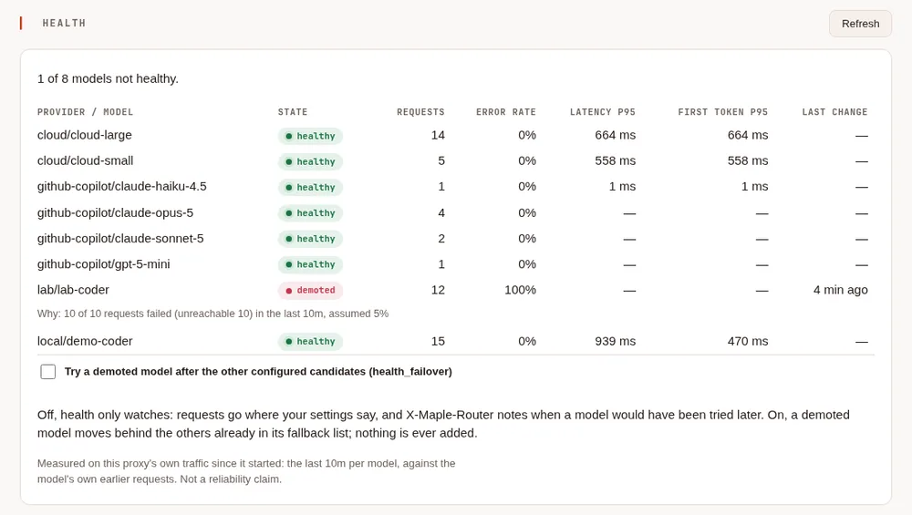
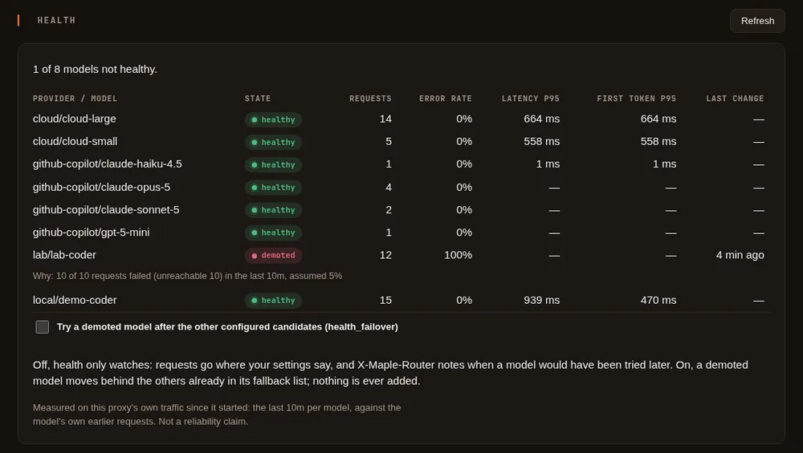

Provider health #
On this page
The proxy watches how each provider and model answers, from the requests that already go through it, and tells you when one is having a bad time. By default it only watches: nothing about where your requests go changes. You can turn on health failover to have a struggling model tried after the other fallbacks you set up.
There is nothing to configure. Health sends no requests of its own (so it never spends quota to check on a
provider), and stays quiet while things are fine. It is remembered across a restart: a demoted model stays demoted
after the proxy starts again, until a real request shows it answering or you
clear it with maple-proxy health reset or the Health card's Reset button.
In plain words #
- What it is. The proxy watches how each provider and model answers your real requests and marks it healthy, degraded or demoted.
- Why you want it. You see at once which account or server is failing, and, if you choose, requests can try a struggling model last.
- The clicks. On the setup page, Health. The card lists each model with its state and why; Try a demoted model after the other configured candidates turns on failover. Nothing to set up to watch.


What it shows #
Each provider and model the proxy has sent requests to gets one of three states:
| State | What it means |
|---|---|
| healthy | Answering as it usually does. |
| degraded | Failing more than it usually does, or much slower than usual, but not enough to act on. |
| demoted | Failing far more than it usually does. With health failover on, it is tried after your other fallbacks. |
Beside the state you see, for the last 10 minutes: how many requests it got and how many failed (with the kind of failure: rate limited, overloaded, server error, unreachable, out of quota, not authorised), its usual error rate, the 95th-percentile time waiting on the provider and time to the first output of a streamed answer, and why its state last changed. A model that is already being tried last because it recently said it was out of quota or rate limited says so too. A Claude model reached with an Anthropic API key also shows "near Anthropic's rate limit" when the last reply said a tenth or less of its requests or tokens per minute were left; this is read from the rate-limit figures Anthropic sends with every reply, changes no state, and goes away once the limit has refilled.
All figures are measured on your own traffic, by this proxy, since it started. They are not a statement about a provider's reliability in general.
In a terminal #
maple-proxy health # the board, once
maple-proxy health --watch # again every 5 seconds until Ctrl-C (--every 10s to change it)
maple-proxy health --json # the raw figuresIt asks the running proxy on its setup address, like maple-proxy cache.
Clearing a demotion #
A model's state is kept across a restart, so a model you know is fine again (you fixed its server, its quota was renewed) can stay demoted until a real request tests it. To clear it now:
maple-proxy health reset github-copilot/gpt-5 # one model
maple-proxy health reset github-copilot # every model of that provider
maple-proxy health reset # every modelor press Reset beside it on the setup page's Health card (Reset all clears every model). The model is healthy again with a fresh window, so the failures that demoted it are not counted again; its usual figures are kept. The change is written to the events log.
On a response #
When a model that health would demote answers a request, the response says so in X-Maple-Router:
X-Maple-Router: health: would demote github-copilot/gpt-5 (9 of 12 requests failed (rate limited 9) in the last 10m, usually 2%)Nothing is added while a model is healthy or degraded.
In the events log #
Every change of state is written to the events log as a health.change line:
the provider and model, the new state, the previous one and why. With health failover on, health.demote and
health.restore say when a model was moved behind its fallbacks and when it went back.
How a state is decided #
- Against the model's own usual figures. A local model is slow by nature, and a busy hosted one fails now and then on a good day, so each model is compared with its own earlier requests, not with a fixed number. Until a model has enough history, a modest usual error rate is assumed, and speed is not judged at all.
- Never on a handful of requests. Nothing gets worse on fewer than 10 requests, or fewer than 5 failures, in the last 10 minutes. A single local model with a few requests now and then is never flagged.
- Slowness alone never demotes. Speed is compared per thousand input tokens, so long prompts are not mistaken for a slow model, and a slow model can be degraded but not demoted.
- No flapping. A state is kept for at least 5 minutes before it improves, and it must be clearly better, not just a little.
- Real requests decide when a model comes back. A demoted model is held for 5 minutes. After that, the next real request is let through to it: if it answers, the model is healthy again and starts with a clean slate; if not, it is held longer. A model that is demoted again soon after coming back is held longer each time, up to an hour.
- Your own failures do not count. A request you cancelled, one too large for the model, one stopped by a budget or the repeat guard, and other errors in the request itself say nothing about the provider and are left out.
Health failover #
Off by default. Turn it on with the Health failover switch in the setup page's Proxy settings, Fallbacks, or in
config.yaml:
health_failover: onIt applies to the next request, with no restart. With it on, a demoted model is tried after the other models and
accounts you already listed for that request in model_fallbacks and provider_fallbacks, and before any that are
known to be out of quota. That is all it does:
- It never adds a model or a provider. Only the fallbacks you configured are used.
- It never drops one. A demoted model with no fallbacks, or whose fallbacks all fail, is still asked.
- It is visible.
X-Maple-Fallback-Fromnames the model that was passed over, withhealth:and the reason, and the usage log'sroute_reasonishealth-demotedfor each request it moved. - It is shared. Health is kept per proxy, not per caller: on a proxy several people use, one caller's failing requests can demote a model for everyone, by design.
The trade-off: a fallback may be a weaker, slower or differently priced model, so what you spend can change. To see
what it did on your traffic, in DuckDB (with the usage view from maple-proxy usage schema; see
Your usage data):
SELECT first_choice, provider, model, count(*) AS requests, sum(ai_units) AS ai_units
FROM usage
WHERE route_reason = 'health-demoted'
GROUP BY ALL
ORDER BY requests DESC;What it cannot tell you #
- A proxy remembers health across a restart: it saves each model's state and recent figures in
health.jsonin the config folder every few minutes and when it stops, so a demoted model is still demoted after a restart and its usual figures are still known. Figures too old to be compared with any more are dropped, as they would be while running. The file holds only counts and times, never a request. Stop the proxy and delete it to start empty. Several replicas sharing Redis share one record of health instead. - It knows only the requests that go through this proxy. A provider that is down for everyone else but fine for your requests is healthy here.
- For Copilot Auto, health follows the model Copilot chose for each request, so failover does not move Copilot Auto itself.
- Time to first output is measured for streamed answers only.
Related #
Proxy settings · See and filter your usage · Troubleshooting